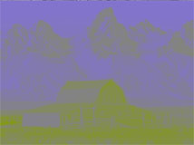
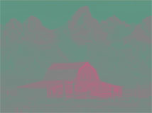
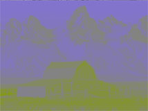
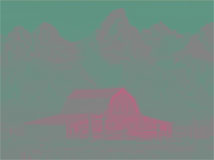

JPEG原理详解
前言
图片压缩有多重要，可能很多人可能并没有一个直观上的认识，举个例子，一张800X800大小的普通图片，如果未经压缩，大概在1.7MB左右，这个体积如果存放文本文件的话足够保存一部92万字的鸿篇巨著《红楼梦》，现如今互联网上绝大部分图片都使用了JPEG压缩技术，也就是大家使用的jpg文件，通常JPEG文件相对于原始图像,能够得到1/8的压缩比，如此高的压缩率是如何做到的呢?
JPEG能够获得如此高的压缩比是因为使用了有损压缩技术，所谓有损压缩，就是把原始数据中不重要的部分去掉，以便可以用更小的体积保存，这个原理其实很常见，比如485194.200000000001这个数，如果我们用485194.2来保存，就是一种“有损”的保存方法，因为小数点后面的那个“0.000000000001”属于不重要的部分，所以可以被忽略掉。JPEG整个压缩过程基本上也是遵循这个步骤：
- 把数据分为“重要部分”和“不重要部分”
- 滤掉不重要的部分
- 保存
JPEG原理
步骤一：图像分割
JPEG算法的第一步，图像被分割成大小为8X8的小块，这些小块在整个压缩过程中都是单独被处理的。后面我们会以一张非常经典的图为例，这张图片名字叫做Lenna，据说是世界上第一张JPG图片，这张图片自从诞生之日开始，就和图像处理结下渊源，陪伴了无数理工宅男度过了的一个个不眠之夜，可谓功勋卓著，感兴趣的朋友可以在这里了解到这张图片的故事。

步骤二：颜色空间转换RGB->YCbCr
所谓“颜色空间”，是指表达颜色的数学模型，比如我们常见的“RGB”模型，就是把颜色分解成红绿蓝三种分量，这样一张图片就可以分解成三张灰度图，数学表达上，每一个8X8的图案，可以表达成三个8X8的矩阵，其中的数值的范围一般在[0,255]之间

不同的颜色模型各有不同的应用场景，例如RGB模型适合于像显示器这样的自发光图案，而在印刷行业，使用油墨打印，图案的颜色是通过在反射光线时产生的，通常使用CMYK模型，而在JPEG压缩算法中，需要把图案转换成为YCbCr模型，这里的Y表示亮度(Luminance)，Cb和Cr分别表示绿色和红色的“色差值”。
“色差”这个概念起源于电视行业，最早的电视都是黑白的，那时候传输电视信号只需要传输亮度信号，也就是Y信号即可，彩色电视出现之后，人们在Y信号之外增加了两条色差信号以传输颜色信息，这么做的目的是为了兼容黑白电视机，因为黑白电视只需要处理信号中的Y信号即可。
根据三基色原理，人们发现红绿蓝三种颜色所贡献的亮度是不同的，绿色的“亮度”最大，蓝色最暗，设红色所贡献的亮度的份额为KR，蓝色贡献的份额为KB，那么亮度为:
$$
Y=K_R \cdot R+(1-K_R-K_B)\cdot G+K_B\cdot B
$$
根据经验，$K_R=0.299$，$K_B=0.114$，那么:
$$
Y=0.229\cdot R + 0.587\cdot G +0.114\cdot B
$$
蓝色和红色的色差的定义如下:
$$
C_b=\frac{1}{2}\cdot \frac{B-Y}{1-K_B}
$$
$$
C_r=\frac{1}{2}\cdot \frac{R-Y}{1-K_R}
$$
最终可以得到RGB转换为YCbCr的数学公式为：
$$
Y=0.299\cdot R+0.5870\cdot G + 0.114 \cdot B
$$
$$
C_b=-0.1687\cdot R -0.3313\cdot G+0.5\cdot B \
$$
$$
C_r=0.5\cdot R -0.4187\cdot G -0.0813\cdot B
$$
YCbCr模型广泛应用在图片和视频的压缩传输中，比如你可以留意一下电视或者DVD后面的接口，就可以发现色差接口。

这是有道理的，还记得我们在文章开始时提到的有损压缩的基本原理吗？有损压缩首先要做的事情就是“把重要的信息和不重要的信息分开”，YCbCr恰好能做到这一点。对于人眼来说，图像中明暗的变化更容易被感知到，这是由于人眼的构造引起的。视网膜上有两种感光细胞，能够感知亮度变化的视杆细胞，以及能够感知颜色的视锥细胞，由于视杆细胞在数量上远大于视锥细胞，所以我们更容易感知到明暗细节。比如说下面这张图：

 



可以明显看到，亮度图的细节更加丰富。JPEG把图像转换为YCbCr之后，就可以针对数据得重要程度的不同做不同的处理。这就是为什么JPEG使用这种颜色空间的原因。
步骤三：离散余弦变换
这次我们来介绍JPEG算法中的核心内容，离散余弦变换（Discrete cosine transform），简称DCT。
离散余弦变换属于傅里叶变换的另外一种形式，没错，就是大名鼎鼎的傅里叶变换。傅里叶是法国著名的数学家和物理学家，1807年，39岁的傅里叶在他的一篇论文里提出了一个想法，他认为任何周期性的函数，都可以分解为为一系列的三角函数的组合，这个想法一开始并没有得到当时科学界的承认，比如当时著名的数学家拉格朗日提出质疑，三角函数无论如何组合，都无法表达带有“尖角”的函数，一直到1822年拉格朗日死后，傅里叶的想法才正式在他的著作《热的解析理论》一书中正式发表。

金子总会闪光，傅里叶变换如今广泛应用于数学、物理、信号处理等等领域，变换除了它在数学上的意义外，还有其哲学上的伟大意义，那就是，世上任何复杂的事物，都可以分解为简单的事物的组合，而这个过程只需要借助数学工具就可以了。但是当年拉格朗日的质疑是正确的，三角函数的确无法表达出尖角形状的函数，不过只要三角函数足够多，可以无限逼近最终结果。比如下面这张动图，就动态描述了一个矩形方波，是如何做傅里叶分析的。

当我们要处理的不再是函数，而是一堆离散的数据时，并且这些数据是对称的话，那么傅里叶变化出来的函数只含有余弦项，这种变换称为离散余弦变换。举个例子，有一组一维数据$[x_0,x_1,x_2,…,x_{n-1}]$,那么可以通过DCT变换得到n个变换级数$F_i$
$$
F_m=\sum_{k=0}^{n-1}x_k\cdot \mathrm{cos}[\frac{\pi}{2}m(k+\frac{1}{2})] \quad m=0,1,2,…,n-1
$$
此时原始数据Xi可以通过离散余弦变换变化的逆变换（IDCT)表达出来
$$
x_m=\frac{F_0}{n}+\sum_{k=1}^{n-1}\left[\frac{2F_k}{n}\mathrm{cos}\left[\frac{\pi}{n}(m+\frac{1}{2}k)\right]\right]
$$
也就是说，经过DCT变换，可以把一个数组分解成数个数组的和，如果我们数组视为一个一维矩阵，那么可以把结果看做是一系列矩阵的和
$$
\left [ \begin{matrix}x_0\\x_1\\x_2\\…\\x_n\end{matrix} \right ] =
\frac{F_0}{n}
\left [ \begin{matrix}1\\1\\1\\…\\1\end{matrix} \right ] +
\frac{2F_1}{n}
\left [ \begin{matrix}cos\frac{\pi}{2n}\\cos\frac{\pi}{2n}\\cos\frac{\pi}{2n}\\…\\cos\frac{(2n-1)\pi}{2n}\end{matrix} \right ] +
\frac{2F_2}{n}
\left [ \begin{matrix}cos\frac{2\pi}{2n}\\cos\frac{6\pi}{2n}\\cos\frac{10\pi}{2n}\\…\\cos\frac{(4n-2)\pi}{2n}\end{matrix} \right ]+
\frac{2F_3}{n}
\left [ \begin{matrix}cos\frac{3\pi}{2n}\\cos\frac{9\pi}{2n}\\cos\frac{15\pi}{2n}\\…\\cos\frac{(6n-3)\pi}{2n}\end{matrix} \right ]+…+
\frac{2F_{n-1}}{n}
\left [ \begin{matrix}cos\frac{(n-1)\pi}{2n}\\cos\frac{2(n-1)\pi}{2n}\\cos\frac{3(n-1)\pi}{2n}\\…\\cos\frac{(2n-1)(n-1)\pi}{2n}\end{matrix} \right ]
$$
举个例子，我们有一个长度为8的数字，内容为50,55,67,80,-10,-5,20,30，经过DCT转换，得到8个级数为287.0,106.3,14.2,-110.8,9.2,65.7,-8.2,-43.9，根据公式2.3把这个数组转换为8个新的数组的和，如果我们使用图像来表达的话，就可以发现DCT转换的有趣之处了

奥妙之处在于，经过DCT，数据中隐藏的规律被发掘了出来,杂乱的数据被转换成几个工整变化的数据。DCT转换后的数组中第一个是一个直线数据，因此又被称为“直流数据”，简称DC，后面的数据被称为“交流数据”，简称AC，这个称呼起源于信号分析中的术语。
在JPEG压缩过程中，经过颜色空间的转换，每一个8X8的图像块，在数据上表现为3个8X8的矩阵，紧接着我们对这三个矩阵做一个二维的DCT转换，二维的DCT转换公式为:
$$
F(u,v)=\alpha(u)*\alpha(v)*\sum_{x=0}^{7}\sum_{y=0}^{7}f(x,y)\mathrm{cos}(\frac{2x+1}{16}u\pi)\mathrm{cos}(\frac{2y+1}{16}v\pi) \quad u,v=0,1,2,…,7
$$
$$
\alpha(u)=\begin{cases} \frac{1}{\sqrt{8}} \quad \mathrm{when} \quad u=0\ \frac{1}{2} \quad \mathrm{when}\quad u\neq0 \end{cases}
$$
DCT的威力究竟有多大，我们可以做一个实际的测试，比如一个所有数值都一样的矩阵，经过DCT转换后，将所有级数组合成一个新的矩阵:

可以看到，经过DCT转换，矩阵的“能量”被全部集中在左上角上的直流分量F(0,0）上，其他位置都变成了0。
在实际的JPEG压缩过程中，由于图像本身的连贯性，一个8X8的图像中的数值一般不会出现大的跳跃，经过DCT转换会有类似的效果，左上角的直流分量保存了一个大的数值，其他分量都接近于0，我们以Lenna左上角第一块图像的Y分量为例，经过变换的矩阵为:

可以看到，数据经过DCT变化后，被明显分成了直流分量和交流分量两部分，为后面的进一步压缩起到了充分的铺垫作用，可以说是整个JPEG中最重要的一步，后面我们会介绍数据量化。
步骤四：数据量化
经过上一节介绍的离散余弦变换，图像数据虽然已经面目全非，但仍然是处于“可逆”的状态，也就是说我们还没有进入“有损”的那一步。这次我们来玩真的，看一下数据中的细节是如何被滤去的。先来考察一下要对付的问题是什么，经过颜色空间转换和离散余弦变换，每一个8X8的图像块都变成了三个8X8的浮点数矩阵，分别表示Y,Cr,Cb数据，比如以其中某个亮度数据矩阵举例，它的数据如下:

我们的问题是，在可以损失一部分精度的情况下，如何用更少的空间存储这些浮点数？答案是使用量子化（Quantization），简称量化。“量子”这个概念来自于物理学，意思是说连续的能量可以看做是一个个单元体的组合，看起来高端大气，其实很简单，比如游戏中在处理角色面朝方向时，一般并不是使用0到2π这样的浮点数，而是把方向分成16个区间，用0到16这样的整数来表示，这样只用4个bit就足够了。JPEG提供的量子化算法如下：
$$
B_{i,j}=\mathrm{round}(\frac{G_{i,j}}{Q_{i,j}}) \quad i,j=0,1,2,\cdots,7
$$
其中G是我们需要处理的图像矩阵，Q称作量化系数矩阵（Quantization matrices），JPEG算法提供了两张标准的量化系数矩阵，分别用于处理亮度数据Y和色差数据Cr以及Cb。
其中round函数是取整函数，但考虑到了四舍五入，也就是说: